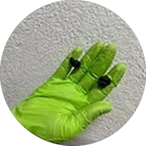

Лікування руками: лікар працює з хребтом, м'язами, суглобами і животом.
головний більостеохондрозгрижі й протрузіїсколіозрадикулітміозитпорушений тонус м'язівопущення шлунка
Як проходить. Спершу лікар оглядає руками, потім сеанси по 15–30 хвилин. Техніки обирає під стадію хвороби: мобілізація, м'язово-енергетичні, фасціальні, релаксаційні.
Кінезотерапія
Лікування рухом. Кінезіологічна діагностика показує, які м'язи працюють неправильно, а вправи це виправляють.
біль у спинібіль у суглобахневрологічні проблемиортопедичні проблемипорушення постави
Як проходить. Вправи на тренажерах і шведській стінці. Кожну вправу в центрі пояснюють і показують.
Лікувальний масаж
Класичний масаж і масаж при сколіозі. Виконують досвідчені масажисти.
біль у спині, шиї, плечахголовний більсколіознаслідки сидячої роботивтома і стрес
Як проходить. Знімає напругу, покращує кровообіг і повертає м'язам тонус. Разом із вправами ефект сильніший.
Вакуумно-роликовий масаж
Апаратний масаж: ролики і вакуум пропрацьовують м'язи та підшкірні тканини.
напружені м'язивідновлення після навантажень
Як проходить. Доповнює ручний масаж. Чи підходить він вам, підкаже фахівець.

Гірудотерапія
Лікування медичними п'явками. Гірудин у їхній слині знижує в'язкість крові і зменшує запалення.
варикоззахворювання суглобівподаграголовний більсудинні захворюваннягінекологічні захворювання
Як проходить. П'явки з біофабрики, кожну використовують один раз. Під час процедури відчувається свербіж, а не сильний біль.
Фізична терапія і ЛФК
Індивідуальна програма з фізичним терапевтом.
відновлення після операційтравми і пораненняхронічний біль у спині й суглобахмалорухливий спосіб життялюдям похилого віку
Як проходить. Фізичний терапевт добирає методику персонально і веде вас до результату.
Корекція постави і сколіозу
Для дітей і дорослих. Сколіоз починається з порушеної постави, тому краще помітити його рано.
сколіозкіфозлордозплоскостопістьсутулість
Як проходить. Методика Сергійчука: корекційні вправи близько 7 хвилин щоранку, правильна посадка за столом і партою, правильна хода.
З чим звертаються
Найчастіші проблеми, з якими працюють у центрі.
Хребет
Остеохондроз
Міжхребцеві грижі й протрузії
Радикуліт
Люмбаго, «прострел» у попереку
Ішіас, запалення сідничного нерва
Сколіоз, кіфоз, лордоз
Голова і нерви
Головний біль
Потилична невралгія
Міжреберна невралгія
Вегетосудинна дистонія
Суглоби
Артроз і артрит
Вивихи, зокрема плеча
Відновлення кульшових суглобів
Подагра
Судини
Варикоз
Судинні захворювання
Тромбоз поверхневих вен
Живіт
Опущення шлунка (гастроптоз)
Живіт після пологів
«Підорва» і «підвереда», як кажуть у народі
Відновлення
Після травм і поранень
Після операцій
Сидяча робота і хронічний біль
Тут буде фото лікаря
Іван Сергійчук
також відомий як Іван Довгун-Сергійчук
Мануальний терапевт. Онук народного лікаря Івана Прокоповича Довгуна.
Разом із дідом видав кілька друкованих посібників
Розробив корекційні вправи для діагностики й реабілітації хребта в дітей і дорослих
Запатентував протиостеохондрозний коректор
До нього приїжджають пацієнти з України, Польщі та Італії
Принцип лікаря
Хворобу легше попередити, ніж лікувати. Тіло — як будинок: таз — його фундамент, а хребет — стіни.
Разом із лікарем працюють фізичні терапевти, масажисти і фахівець з гірудотерапії.